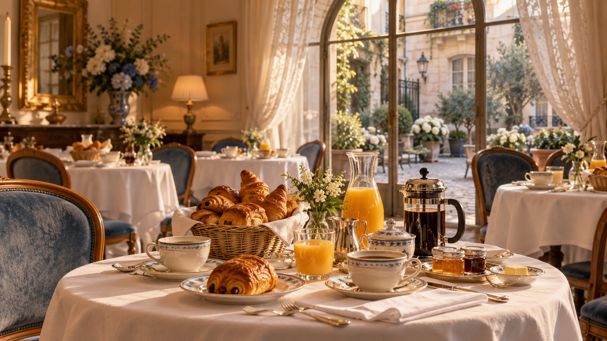

After the call from Lesson 3, Sasha lands in Paris on Wednesday afternoon. First the hotel reception, then a quick coffee at the brasserie across the street — and Marco finally shows up. Grammar focus: when to use Present Simple and when to switch to Present Continuous.
know, like, want, understand, have (owns)Before Paris, let's reactivate the pieces from the call with Marco.
Good afternoon, welcome to Hôtel Léonie. Do you have a reservation?
Yes, I do. The name is Sasha Kuznetsova, three nights.
Perfect. May I see your passport, please? And are you paying by card or in cash?
By card. Here you go. Is breakfast included?
Yes, it is served from seven to ten in the dining room on the ground floor. Here is your key card — room 304, third floor. The lift is on the right.
Thank you. One more thing — do you have Wi-Fi in the rooms?
Of course. The password is on the back of the key card. Enjoy your stay!

Use Present Simple when something happens every day, is generally true, or belongs to a timetable.
| Person | Positive | Negative | Question |
|---|---|---|---|
| I / you / we / they | I work | I don't work | Do you work? |
| he / she / it | she works | she doesn't work | Does she work? |
Signal words: every day · usually · often · sometimes · never · on Mondays · twice a week
Examples (hotel):
Sasha! Over here. Sorry I'm late — I 'm finishing a call with Rome. (walking up, phone to his ear)
No worries. I 'm just reading the menu — it's completely in French.
Ha! Welcome to Paris. So, how is your week going? Are you working while you travel, or is this pure holiday?
A bit of both. I usually work Monday to Thursday, but this week I 'm taking Thursday and Friday off.
Smart. What are you planning for tomorrow?
Honestly, I don't know yet. I 'm thinking about the Louvre in the morning and the Marais in the afternoon.
Form: am / is / are + V-ing
| Person | Positive | Negative | Question |
|---|---|---|---|
| I | I'm reading | I'm not reading | Am I reading? |
| he / she / it | she's working | she isn't working | Is she working? |
| we / you / they | we're waiting | we aren't waiting | Are we waiting? |
Signal words: right now · at the moment · currently · this week · today · still
-ing spelling traps:
work → working (just add -ing)take → taking (drop silent -e)stop → stopping (double final consonant after short vowel: stop, run, swim, sit)lie → lying (-ie → -ying)Stative verbs — don't use in PC: know · like · love · hate · want · need · understand · believe · remember · own · have (= own). Say I know Paris, not I'm knowing Paris.
| Clue | Present Simple | Present Continuous |
|---|---|---|
| When? | every day · in general · always true | right now · around today · this week |
| Signal | usually / often / every / on Mondays | right now / at the moment / today / this week |
| Shape | I work / she works | I'm working / she's working |
| Example | I live in Moscow. | I 'm staying in Paris this week. |
| Example | Marco works in Rome. | Marco 's finishing a call right now. |
| Trap | stative verbs stay here (know, like, want) | never with stative verbs |
3-second decision: ask yourself «around now / changing?» — yes → PC. «always / in general?» — yes → PS.
Sasha is sitting at a small table outside the brasserie. She usually travels alone, but today she is waiting for Marco. The waiter brings a glass of water. "Is this your first time in Paris?" he asks. "Yes," she says, "I 'm staying for three nights. I live in Moscow, but I 'm taking the week off." Marco arrives and smiles. He is wearing the same jacket she remembers from the photo. "Sorry I'm late," he says, "I 'm finishing one more call, then I'm all yours."
Walk up to the desk. In four sentences: greet, give your name, confirm nights, ask about breakfast. Use at least one Present Simple ("Breakfast is included?") and one Present Continuous ("I 'm staying three nights").
Marco asks «What are you doing this week?». Answer with: 1 PS routine ("I usually…") + 1 PC right-now ("Right now I…") + 1 PC this-week ("This week I…"). 3 sentences · 20 seconds.
Imagine you show Nastya a photo of the café. Use only Present Continuous to describe at least four actions you see: Marco is talking / The waiter is bringing / People are walking / The sun is going down.
Call Nastya. Start with the softener: Hey, do you have a minute? Then give her: where you are now (PC) + what you usually do on holiday (PS) + what you are doing tomorrow (PC + «going to» from L3). End with: «Talk later, I'll send pictures.»
Nastya asks «How is Paris?». Reply in 60-80 words. Must contain:
I'm sitting / I'm drinking…I usually / I always…This week I'm staying…Tomorrow I'm going to…